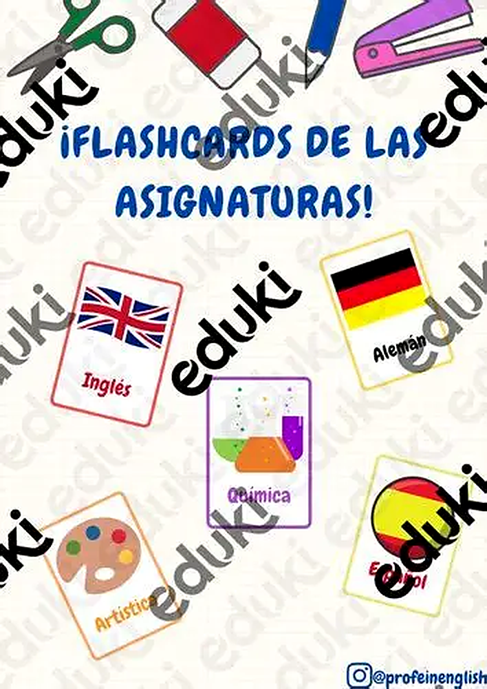
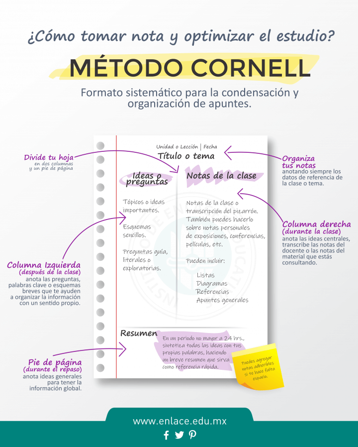
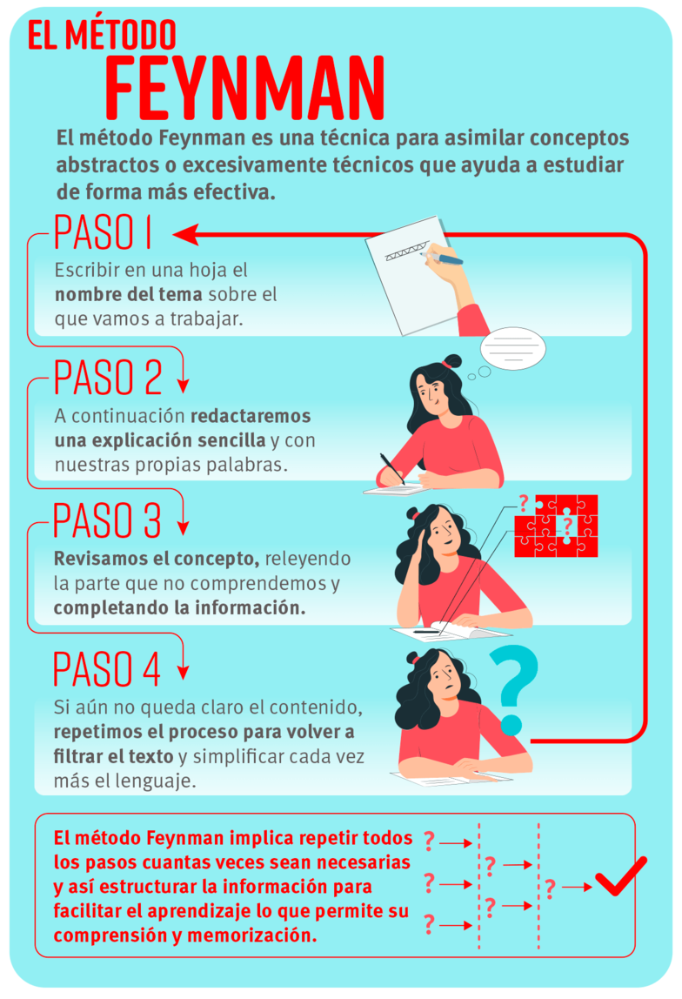
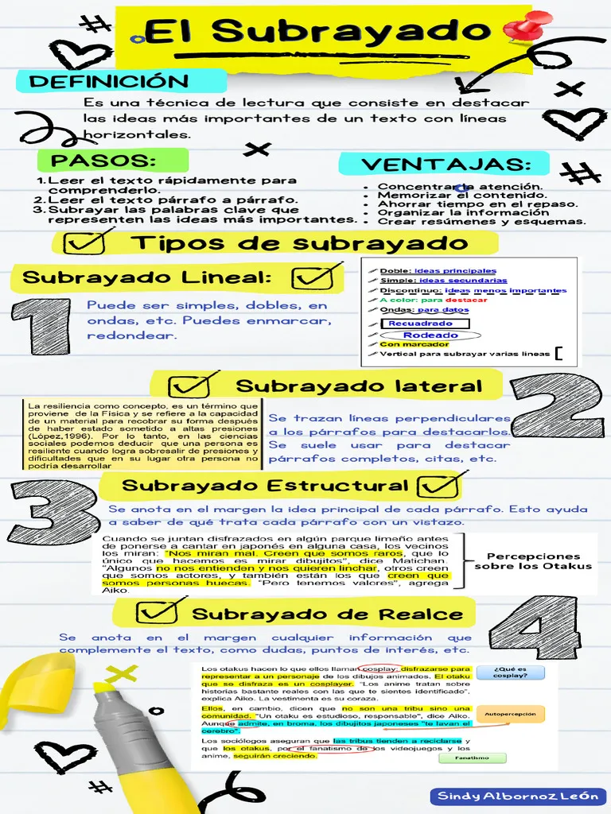
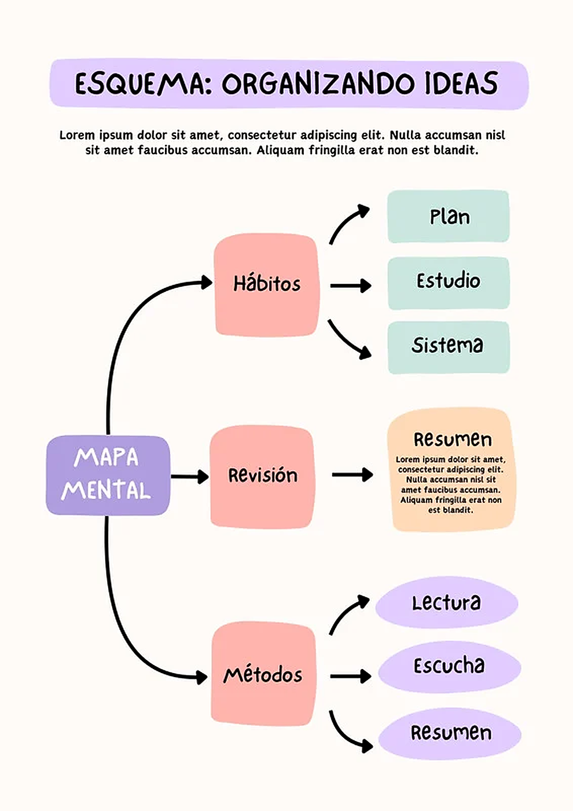
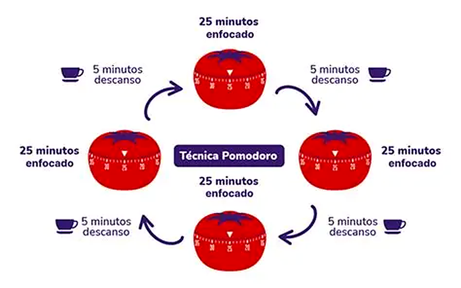

Explora las actividades y fotografías de este nivel.
TÉCNICA 01
Flashcards (Tarjetas de estudio): Escribe una pregunta o concepto en un lado y la respuesta en el otro para repasar datos breves, fórmulas o vocabulario.

TÉCNICA 02
Método Cornell: Divide una hoja en secciones para tomar apuntes, anotar palabras clave y escribir un resumen al final.

TÉCNICA 03
Técnica de Feynman: Explica el tema en voz alta con palabras sencillas (como si se lo contaras a un niño) para identificar qué partes no has entendido bien.

TÉCNICA 04
Subrayado con criterio: Lee primero el texto de forma rápida y, en la segunda lectura, destaca solo las ideas principales y palabras clave, no frases completas.

TÉCNICA 05
Mapas mentales y esquemas: Coloca el tema principal al centro y ramifica con subtemas, fechas, colores e iconos para estimular la memoria visual.

TÉCNICA 06
Técnica Pomodoro: Estudia en bloques de 25 minutos con 5 minutos de descanso. Después de 4 bloques, toma un descanso más largo de 15 a 20 minutos.
